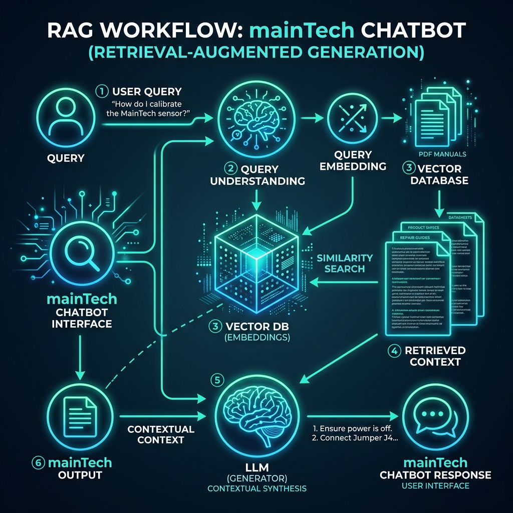
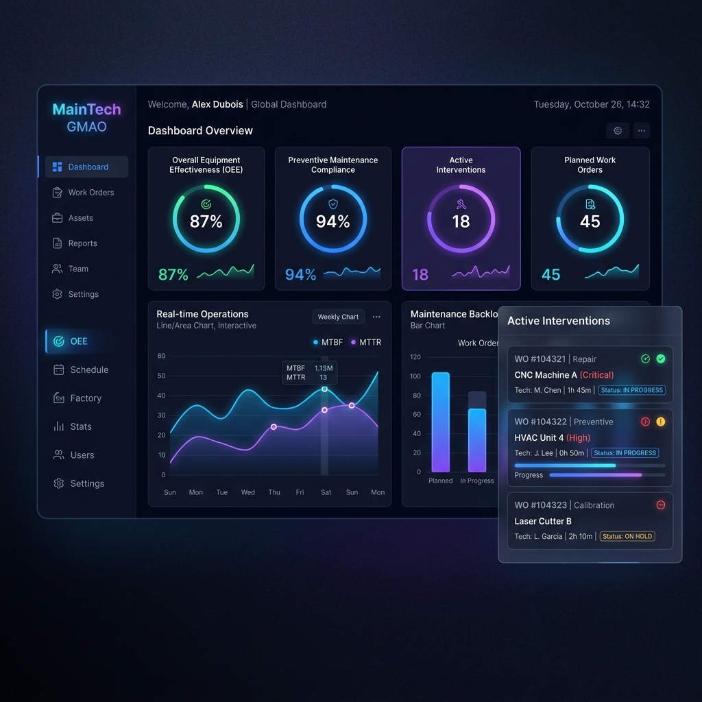
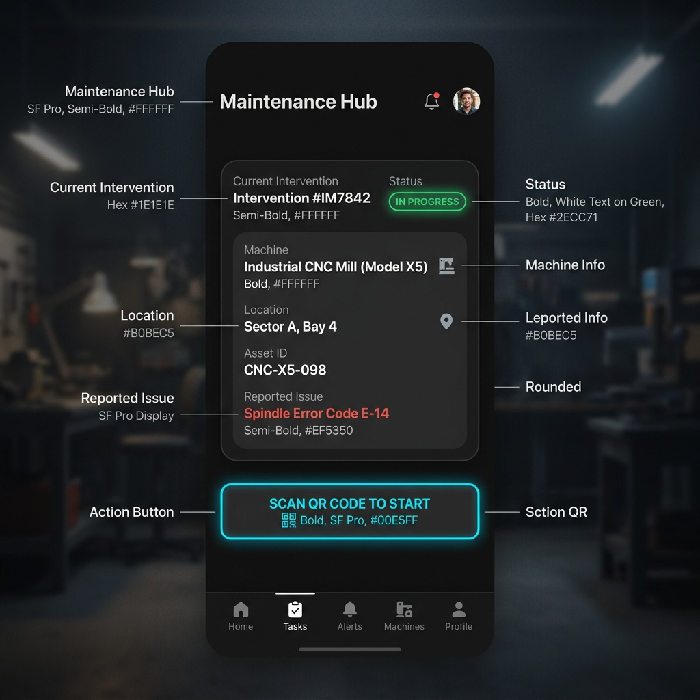
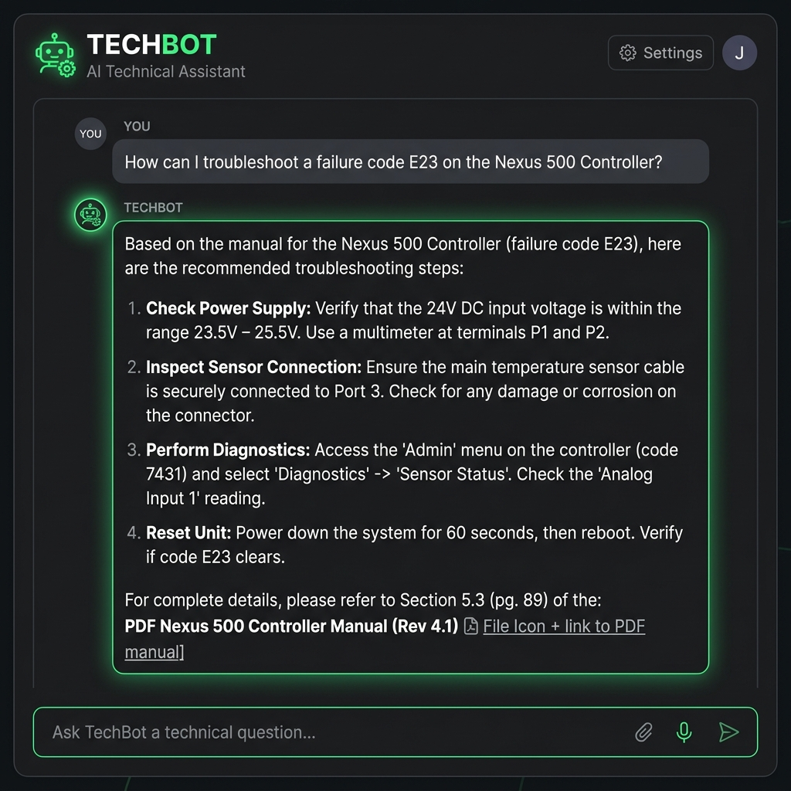

Présentation de la structure d'accueil, contexte d'évolution du projet, problématiques métiers et objectifs de digitalisation.
Étude critique du système de maintenance existant, proposition de l'écosystème numérique et spécifications métiers détaillées.
Le fonctionnement actuel repose sur des fiches physiques, induisant des limites de transmission importantes :
L'architecture du système se divise en trois composants hautement disponibles :
| Rôle Utilisateur | Fonctionnalités Clés Implémentées |
|---|---|
| Superviseur | Déclaration de pannes en direct, spécification de priorité et gravité, suivi de ligne. |
| Technicien | Suivi des tâches assignées, scan de QR Code pour débuter, bon de travail numérique, chat IA. |
| Chef d'Équipe | Attribution automatique ou manuelle, indicateurs BI (MTTR), validation d'autorisations. |
| Magasinier | Gestion du catalogue de pièces, validation et livraison des demandes de rechange. |
Architecture générale logique et physique du système, cas d'utilisation UML, modélisation des données relationnelles et diagrammes de séquence.
| Modèle SQLAlchemy | Attributs Principaux | Relations / Associations |
|---|---|---|
| Machine | id_machine, nom, qr_code, localisation |
Appartient à un GroupeMachine, possède des Pannes. |
| Panne | id_panne, priorite, gravite, statut, date_decl |
Liée à Machine, Superviseur et Interventions. |
| Intervention | id_intervention, date_scan_qr, date_fin, statut |
Associe Panne et Technicien, possède un Rapport. |
| DemandeRechange | id_demande, quantite_demandee, statut, date_demande |
Lie une Intervention à une PieceRechange. |
Environnement logiciel, technologies clés et présentation des maquettes graphiques des applications mobile et de bureau.
Le flux de traitement de la base documentaire pour assister le technicien :

La console de bureau pour le management et la Business Intelligence :

L'application mobile (Flutter) pour le technicien de terrain :

L'interface d'interaction avec le chatbot intelligent RAG :

Bilan du projet, objectifs atteints, et perspectives d'évolution futures vers l'usine connectée et automatisée.
Questions & Réponses